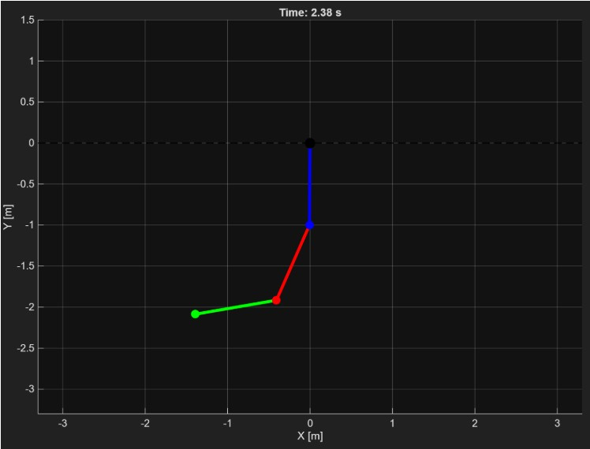
Forward Dynamic Simulation of Planar 3R Robot Arm
MATLAB-Based Dynamics and Chaotic Motion Analysis
Fall 2025
Overview
Developed MATLAB simulation of a 3-link revolute (3R) planar robot arm falling under gravity to study nonlinear dynamics and chaotic motion. The project involved deriving complete equations of motion using Lagrangian mechanics, implementing numerical solvers, and analyzing the complex coupling effects between joints that produce chaotic behavior.
Challenge
Multi-link pendulum systems exhibit complex chaotic motion due to strong coupling between joints. Predicting the behavior of a 3R arm falling from an extended horizontal position requires solving coupled nonlinear differential equations. The challenge was to correctly derive the mass matrix, Coriolis matrix, and gravity vector, then implement a robust numerical simulation that accurately captures the physical dynamics.
Solution
Derived complete equations of motion using Lagrangian mechanics, computing configuration-dependent mass matrix (3×3), velocity-dependent Coriolis matrix (3×3), and gravitational torques. Implemented forward dynamics simulation in MATLAB using the ODE45 solver to numerically integrate joint accelerations and predict system behavior. Validated results through energy conservation checks and physical intuition—debugging revealed critical sign errors in the mass matrix through physically impossible behaviors during simulation.
Technical Details
Mathematical Framework
- Lagrangian mechanics formulation for a 3-DOF planar pendulum system
- Mass Matrix (M): Configuration-dependent inertia properties (3×3, symmetric, positive-definite)
- Coriolis Matrix (C): Velocity-dependent forces computed using Christoffel symbols
- Gravity Vector (G): Joint-dependent gravitational torques
- Energy Conservation: Kinetic energy \(T = \tfrac{1}{2}\dot{\theta}^\mathsf{T} M(\theta)\dot{\theta}\) and potential energy validation
System Parameters
- Link lengths: L₁ = L₂ = L₃ = 1 m
- Masses: M₁ = 3 kg, M₂ = 2 kg, M₃ = 1 kg
- Gravity: g = -9.81 m/s²
- Initial condition: Arm extended horizontally to the right
- Time span: 60 seconds of simulated motion
Implementation
- Platform: MATLAB
- ODE Solver: ODE45 (Runge–Kutta 4th/5th order adaptive)
- State variables: Joint angles (θ₁, θ₂, θ₃) and velocities (θ̇₁, θ̇₂, θ̇₃)
- Forward dynamics: \(\ddot{\theta} = M(\theta)^{-1}\big(G(\theta) - C(\theta,\dot{\theta})\dot{\theta}\big)\)
- Visualization: Animated robot arm motion and trajectory plots
Key Observations
- Chaotic motion emerges from fully deterministic equations of motion.
- Strong coupling between joints creates a pronounced “whipping” motion at the lightest mass M₃.
- Lighter end mass amplifies chaotic effects through acceleration coupling.
- Energy conservation trends validate the numerical simulation’s accuracy.
- Physical intuition was essential for debugging—sign errors in the mass matrix produced impossible motions that revealed mistakes.
- The system’s long-term behavior is impossible to predict through reasoning alone; simulation is required.
Technical Documentation
Prepared complete derivations of the mass matrix, Coriolis matrix, and gravity vector, supported by hand calculations for verification. MATLAB code is extensively commented to explain each step of the formulation and simulation workflow. A full project report, including equations, simulation results, and discussion of chaotic behavior, is available upon request.
Results
- ✅ Successfully simulated 3R arm dynamics under gravity
- ✅ Demonstrated chaotic behavior emerging from joint coupling
- ✅ Validated results through energy conservation checks
- ✅ Identified and corrected numerical errors through physical reasoning
- ✅ Created animated visualization of complex motion
- 📹 Simulation video: https://youtu.be/buUVGLTktPc
- 📊 Generated trajectory plots and state-space analysis
Learning Outcomes
- Mastered Lagrangian mechanics for multi-body, multi-DOF systems.
- Developed MATLAB programming skills for dynamics simulation.
- Strengthened understanding of numerical integration techniques and ODE solvers.
- Learned to debug simulations using physical validation and energy checks.
- Gained intuition for how multi-DOF systems can exhibit chaotic motion despite deterministic equations.
Image & Media Gallery
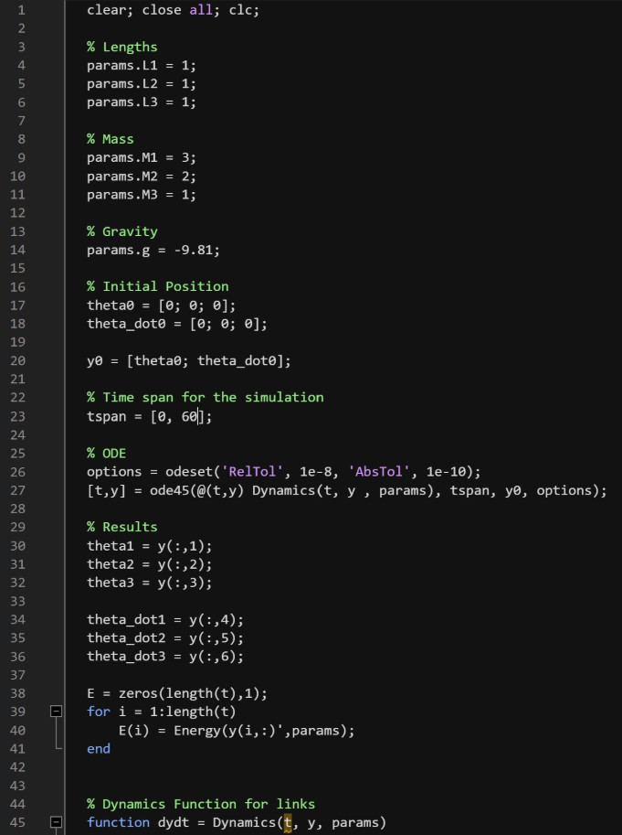
Fig.2: MATLAB code for 3R pendulum dynamics – part 1.
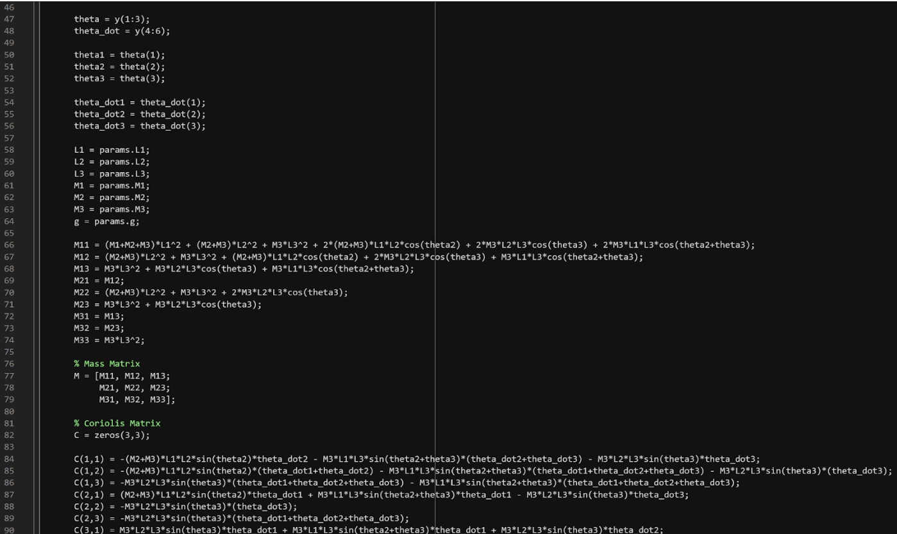
Fig.3: MATLAB code for 3R pendulum dynamics – part 2.
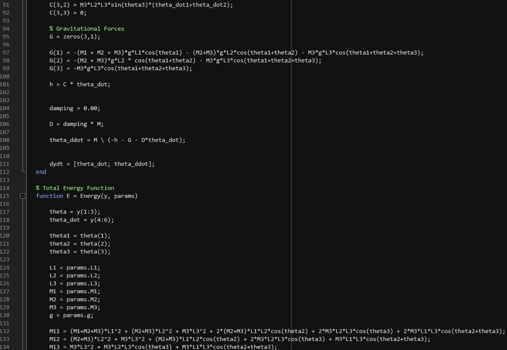
Fig.4: MATLAB code for 3R pendulum dynamics – part 3.
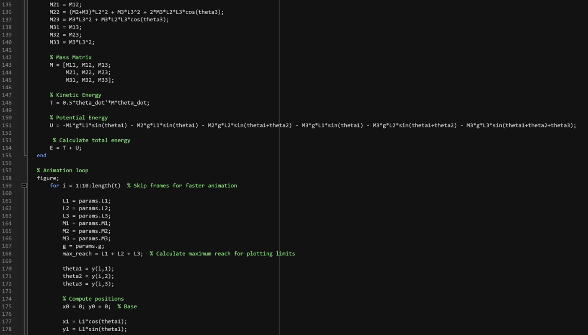
Fig.5: MATLAB code for 3R pendulum dynamics – part 4.
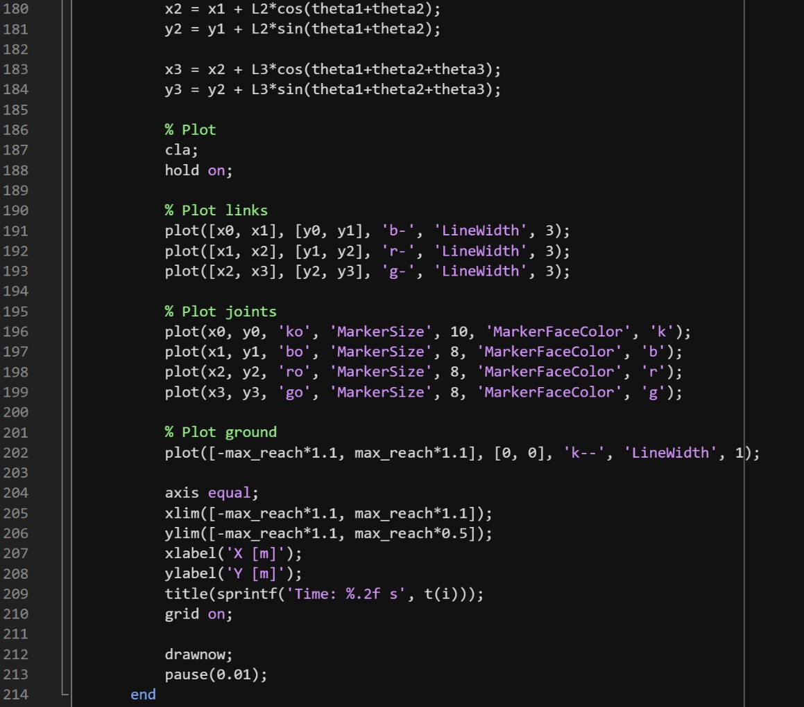
Fig.6: MATLAB code for 3R pendulum dynamics – part 5.
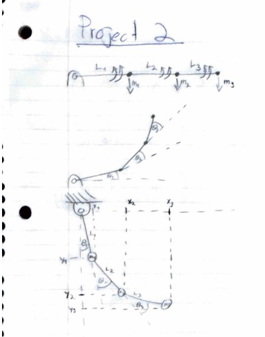
Fig.7: Hand calculations for 3R pendulum dynamics – page 1.
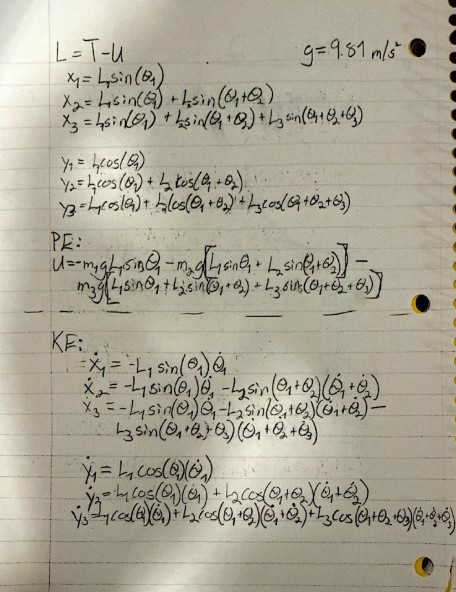
Fig.8: Hand calculations for 3R pendulum dynamics – page 2.
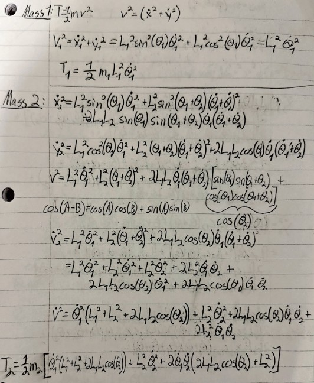
Fig.9: Hand calculations for 3R pendulum dynamics – page 3.
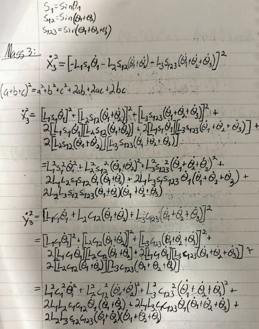
Fig.10: Hand calculations for 3R pendulum dynamics – page 4.
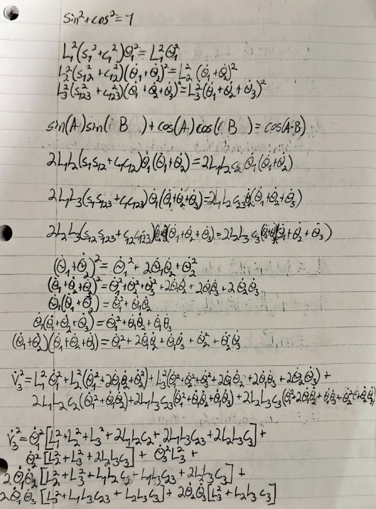
Fig.11: Hand calculations for 3R pendulum dynamics – page 5.
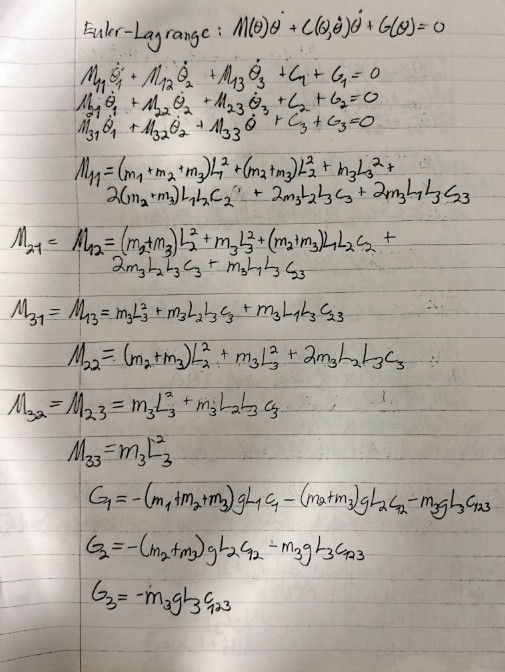
Fig.12: Hand calculations for 3R pendulum dynamics – page 6.
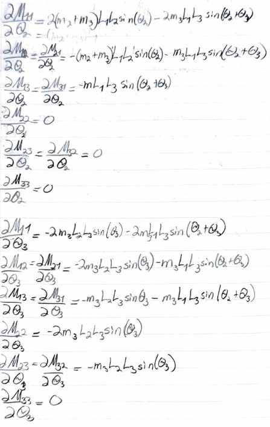
Fig.13: Hand calculations for 3R pendulum dynamics – page 7.
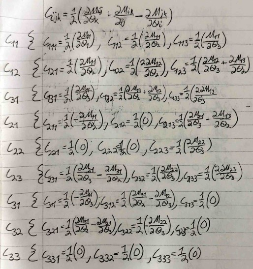
Fig.14: Hand calculations for 3R pendulum dynamics – page 8.
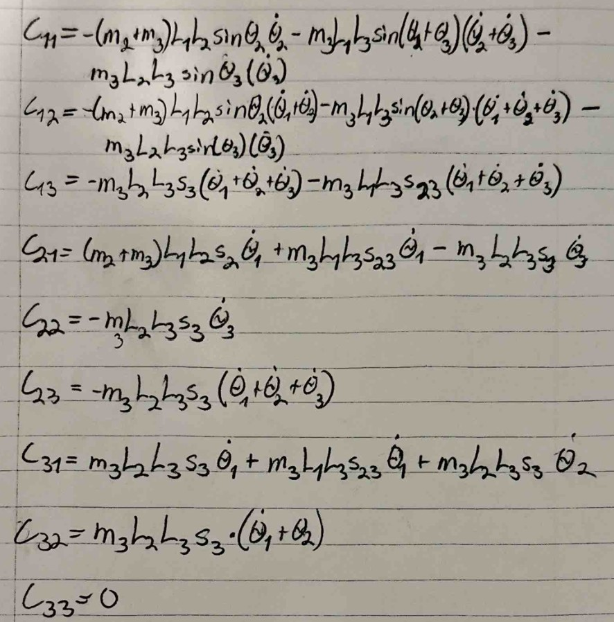
Fig.15: Hand calculations for 3R pendulum dynamics – page 9.